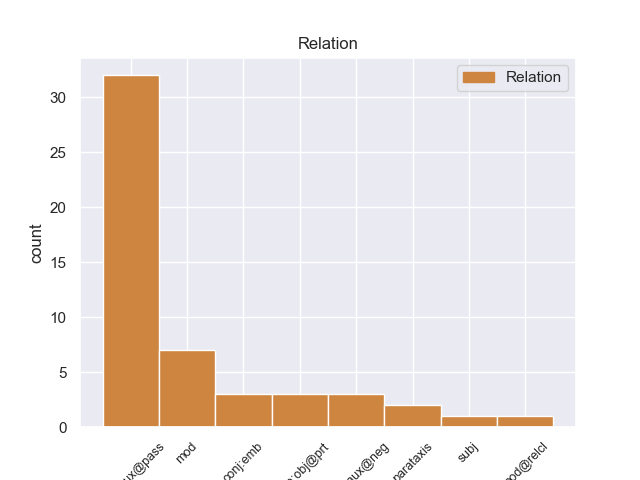
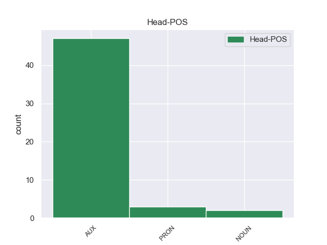
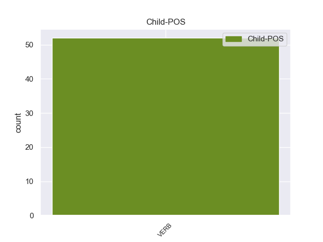

Distribution of features within this leaf



Agreement Rules sorted by frequency.
- When the dependent token is the complement for auxiliary(comp:aux@pass) of the head token, and the head token is AUX and the dependent token is VERB.
1 E _ _ _ _ 0 _ _ _
2 1992 _ _ _ _ 0 _ _ _
3 e _ _ _ _ 0 _ _ _
4 voe _ AUX _ Mood=Ind|Number=Sing|Person=3|Tense=Past|VerbForm=Fin 0 _ _ _
5 pedet pede VERB _ Tense=Past|VerbForm=Part 4 comp:aux@pass _ _
6 da _ _ _ _ 0 _ _ _
7 c'houel _ _ _ _ 0 _ _ _
8 an _ _ _ _ 0 _ _ _
9 transmusicales _ _ _ _ 0 _ _ _
10 e _ _ _ _ 0 _ _ _
11 Roazhon _ _ _ _ 0 _ _ _
12 ha _ _ _ _ 0 _ _ _
13 kanañ _ _ _ _ 0 _ _ _
14 a _ _ _ _ 0 _ _ _
15 reas _ _ _ _ 0 _ _ _
16 e _ _ _ _ 0 _ _ _
17 - _ _ _ _ 0 _ _ _
18 unan _ _ _ _ 0 _ _ _
19 a _ _ _ _ 0 _ _ _
20 capella _ _ _ _ 0 _ _ _
21 etre _ _ _ _ 0 _ _ _
22 ur _ _ _ _ 0 _ _ _
23 strollad _ _ _ _ 0 _ _ _
24 rock _ _ _ _ 0 _ _ _
25 hag _ _ _ _ 0 _ _ _
26 ur _ _ _ _ 0 _ _ _
27 strollad _ _ _ _ 0 _ _ _
28 rap _ _ _ _ 0 _ _ _
29 , _ _ _ _ 0 _ _ _
30 dirak _ _ _ _ 0 _ _ _
31 tud _ _ _ _ 0 _ _ _
32 n'anavezas _ _ _ _ 0 _ _ _
33 netra _ _ _ _ 0 _ _ _
34 diwar _ _ _ _ 0 _ _ _
35 - _ _ _ _ 0 _ _ _
36 benn _ _ _ _ 0 _ _ _
37 ar _ _ _ _ 0 _ _ _
38 c'han _ _ _ _ 0 _ _ _
39 e _ _ _ _ 0 _ _ _
40 brezhoneg _ _ _ _ 0 _ _ _
41 . _ _ _ _ 0 _ _ _
1 Eno _ _ _ _ 0 _ _ _
2 en _ _ _ _ 0 _ _ _
3 em _ PRON _ Aspect=Imp|Mood=Ind|Number=Sing|Person=1|Tense=Pres|Variant=Long|VerbForm=Fin 0 _ _ _
4 gavas _ VERB _ Aspect=Imp|Mood=Ind|Number=Sing|Person=2|Tense=Pres|VerbForm=Fin 3 comp:aux@neg _ _
5 gant _ _ _ _ 0 _ _ _
6 Vladimir _ _ _ _ 0 _ _ _
7 Poutin _ _ _ _ 0 _ _ _
8 . _ _ _ _ 0 _ _ _
1 Erru _ _ _ _ 0 _ _ _
2 Aegisthus _ _ _ _ 0 _ _ _
3 en _ _ _ _ 0 _ _ _
4 oad _ _ _ _ 0 _ _ _
5 - _ _ _ _ 0 _ _ _
6 gour _ _ _ _ 0 _ _ _
7 e _ _ _ _ 0 _ _ _
8 voe voe AUX _ Gender=Masc|Number=Sing|Person=3|Tense=Past 0 _ _ _
9 lavaret _ _ _ _ 0 _ _ _
10 dezhañ _ _ _ _ 0 _ _ _
11 gant _ _ _ _ 0 _ _ _
12 Thyestes _ _ _ _ 0 _ _ _
13 e _ _ _ _ 0 _ _ _
14 oa _ VERB _ Form=Ecl|Mood=Ind|Tense=Past 8 mod _ _
15 tad _ _ _ _ 0 _ _ _
16 ha _ _ _ _ 0 _ _ _
17 tad _ _ _ _ 0 _ _ _
18 - _ _ _ _ 0 _ _ _
19 kozh _ _ _ _ 0 _ _ _
20 dezhañ _ _ _ _ 0 _ _ _
21 war _ _ _ _ 0 _ _ _
22 un _ _ _ _ 0 _ _ _
23 dro _ _ _ _ 0 _ _ _
24 . _ _ _ _ 0 _ _ _
Disagree Examples:
1 Un _ _ _ _ 0 _ _ _
2 ehanlec'h _ _ _ _ 0 _ _ _
3 evit _ _ _ _ 0 _ _ _
4 al _ _ _ _ 0 _ _ _
5 listri _ _ _ _ 0 _ _ _
6 - _ _ _ _ 0 _ _ _
7 merdeadenn _ _ _ _ 0 _ _ _
8 hag _ _ _ _ 0 _ _ _
9 ar _ _ _ _ 0 _ _ _
10 Roc'h _ _ _ _ 0 _ _ _
11 a _ _ _ _ 0 _ _ _
12 vez _ AUX _ Form=Ecl|Mood=Ind|Tense=Pres 0 _ _ _
13 gweladennet gweladenne VERB _ Tense=Past|VerbForm=Part 12 comp:aux@pass _ _
14 gant _ _ _ _ 0 _ _ _
15 kalz _ _ _ _ 0 _ _ _
16 a _ _ _ _ 0 _ _ _
17 dud _ _ _ _ 0 _ _ _
18 pep _ _ _ _ 0 _ _ _
19 bloaz _ _ _ _ 0 _ _ _
20 . _ _ _ _ 0 _ _ _
1 Er _ _ _ _ 0 _ _ _
2 c'hontrol _ _ _ _ 0 _ _ _
3 e _ _ _ _ 0 _ _ _
4 vez _ AUX _ Aspect=Hab|Mood=Ind|Number=Sing|Person=3|Polarity=Pos|Tense=Pres 0 _ _ _
5 skingaset skingas VERB _ Tense=Past|VerbForm=Part 4 comp:aux@pass _ _
6 ivez _ _ _ _ 0 _ _ _
7 abadennoù _ _ _ _ 0 _ _ _
8 espar _ _ _ _ 0 _ _ _
9 evel _ _ _ _ 0 _ _ _
10 ar _ _ _ _ 0 _ _ _
11 filmoù _ _ _ _ 0 _ _ _
12 skinwel _ _ _ _ 0 _ _ _
13 pe _ _ _ _ 0 _ _ _
14 telefilmoù _ _ _ _ 0 _ _ _
15 ha _ _ _ _ 0 _ _ _
16 n'int _ _ _ _ 0 _ _ _
17 ket _ _ _ _ 0 _ _ _
18 aozet _ _ _ _ 0 _ _ _
19 evit _ _ _ _ 0 _ _ _
20 bezañ _ _ _ _ 0 _ _ _
21 diskouezet _ _ _ _ 0 _ _ _
22 er _ _ _ _ 0 _ _ _
23 salioù _ _ _ _ 0 _ _ _
24 sinema _ _ _ _ 0 _ _ _
25 . _ _ _ _ 0 _ _ _
1 Unan _ _ _ _ 0 _ _ _
2 eus _ _ _ _ 0 _ _ _
3 pobloù _ _ _ _ 0 _ _ _
4 german _ _ _ _ 0 _ _ _
5 ar _ _ _ _ 0 _ _ _
6 reter _ _ _ _ 0 _ _ _
7 e e AUX _ Tense=Pres|VerbForm=Cop 0 _ _ _
8 oa oa VERB _ Form=Len|Mood=Ind|Tense=Past 7 comp:obj@prt _ _
9 ar _ _ _ _ 0 _ _ _
10 Vurgonded _ _ _ _ 0 _ _ _
11 . _ _ _ _ 0 _ _ _
1 Skrivet _ VERB _ Tense=Past|VerbForm=Part 2 subj _ _
2 ha haver AUX _ Mood=Ind|Number=Sing|Person=3|Tense=Pres|VerbForm=Fin 0 _ _ _
3 savet _ _ _ _ 0 _ _ _
4 en _ _ _ _ 0 _ _ _
5 deus _ _ _ _ 0 _ _ _
6 meur _ _ _ _ 0 _ _ _
7 a _ _ _ _ 0 _ _ _
8 bezh _ _ _ _ 0 _ _ _
9 - _ _ _ _ 0 _ _ _
10 c'hoari _ _ _ _ 0 _ _ _
11 e _ _ _ _ 0 _ _ _
12 galleg _ _ _ _ 0 _ _ _
13 hag _ _ _ _ 0 _ _ _
14 e _ _ _ _ 0 _ _ _
15 brezhoneg _ _ _ _ 0 _ _ _
16 ha _ _ _ _ 0 _ _ _
17 kaset _ _ _ _ 0 _ _ _
18 en _ _ _ _ 0 _ _ _
19 deus _ _ _ _ 0 _ _ _
20 ur _ _ _ _ 0 _ _ _
21 pezh _ _ _ _ 0 _ _ _
22 - _ _ _ _ 0 _ _ _
23 mell _ _ _ _ 0 _ _ _
24 labour _ _ _ _ 0 _ _ _
25 evit _ _ _ _ 0 _ _ _
26 brudañ _ _ _ _ 0 _ _ _
27 ar _ _ _ _ 0 _ _ _
28 c'hoariva _ _ _ _ 0 _ _ _
29 er _ _ _ _ 0 _ _ _
30 skolioù _ _ _ _ 0 _ _ _
31 . _ _ _ _ 0 _ _ _
1 En _ _ _ _ 0 _ _ _
2 em _ _ _ _ 0 _ _ _
3 astenn _ _ _ _ 0 _ _ _
4 a _ _ _ _ 0 _ _ _
5 rae _ _ _ _ 0 _ _ _
6 al _ _ _ _ 0 _ _ _
7 luskad _ _ _ _ 0 _ _ _
8 dispac'h _ _ _ _ 0 _ _ _
9 dre _ _ _ _ 0 _ _ _
10 Elzas _ _ _ _ 0 _ _ _
11 ha _ _ _ _ 0 _ _ _
12 Loren _ _ _ _ 0 _ _ _
13 ha haver AUX _ Mood=Ind|Number=Sing|Person=3|Tense=Pres|VerbForm=Fin 0 _ _ _
14 savet _ _ _ _ 0 _ _ _
15 e _ _ _ _ 0 _ _ _
16 voe _ VERB _ Mood=Ind|Number=Sing|Person=3|Tense=Past|VerbForm=Fin 13 conj:emb _ _
17 Soviedoù _ _ _ _ 0 _ _ _
18 damheñvel _ _ _ _ 0 _ _ _
19 all _ _ _ _ 0 _ _ _
20 e _ _ _ _ 0 _ _ _
21 Hagenau _ _ _ _ 0 _ _ _
22 , _ _ _ _ 0 _ _ _
23 Milhüse _ _ _ _ 0 _ _ _
24 ( _ _ _ _ 0 _ _ _
25 Mulhouse _ _ _ _ 0 _ _ _
26 ) _ _ _ _ 0 _ _ _
27 , _ _ _ _ 0 _ _ _
28 Schlettstadt _ _ _ _ 0 _ _ _
29 ( _ _ _ _ 0 _ _ _
30 Sélestat _ _ _ _ 0 _ _ _
31 ) _ _ _ _ 0 _ _ _
32 , _ _ _ _ 0 _ _ _
33 Kolmar _ _ _ _ 0 _ _ _
34 , _ _ _ _ 0 _ _ _
35 Metz _ _ _ _ 0 _ _ _
36 ha _ _ _ _ 0 _ _ _
37 kêrioù _ _ _ _ 0 _ _ _
38 all _ _ _ _ 0 _ _ _
39 . _ _ _ _ 0 _ _ _